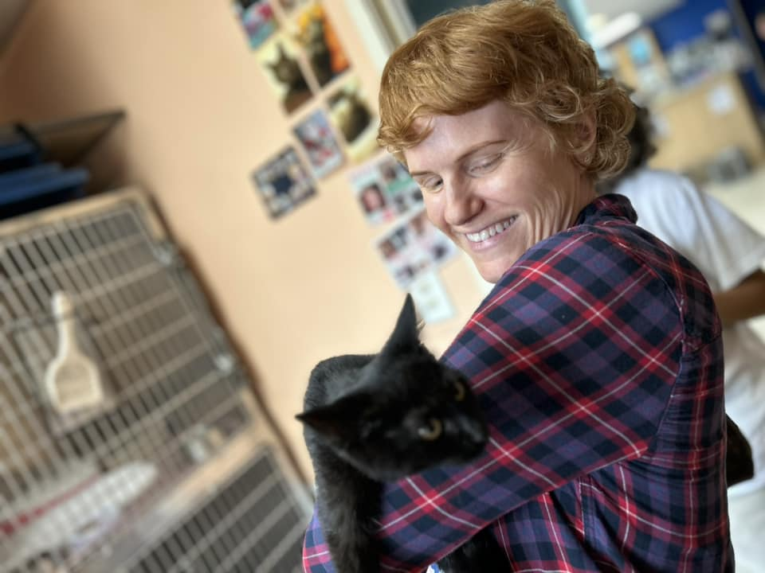

Sheets Pet Clinic normally holds adoption fairs on the second and fourth Saturdays of every month from 1-4 pm at the clinic. We host meet and greets by appointment with approved applicants.
Dr. Sheets’ dream from a child has been to end the pet overpopulation problem, in particular to cats, since cats breed much more prolifically than dogs. She is particularly devoted to the welfare of feral street cats and supports the TNR strategy for caring for managed colonies.
When a kitten or cat from a feral colony seems adoptable, that animal may go into the Sheets Cat Adoption Program. S/he will be tested for FeLV and/or FIV, sterilized, microchipped, vaccinated, dewormed, and treated for fleas.
Between the years of 2014 and 2020, Sheets Pet Clinic cat adoptions found homes for over 1,000 kittens and cats.
For adoption inquires or to learn how to be a foster home, email - petadoptions@sheetspetclinic.com
Please donate to Sheets Cat Adoptions.
You may donate in memory of or in honor of a pet or person.